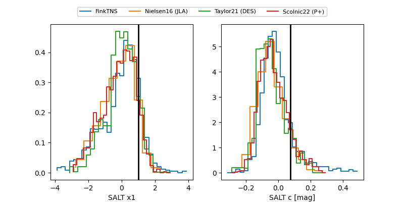

FINK: ZTF25ablxbvl
Lasair: ZTF25ablxbvl
ALeRCE: ZTF25ablxbvl
TNS: 2025wjs
YSE: 2025wjs
ZTF25ablxbvl (ztf,fink)
2025wjs (tns,yse)
equatorial (ra, dec) = (343.4568,+34.95677)
galactic (l, b) = (97.2169,-21.97515)

last atlaso=19.94, ztfg=20.01, ztfr=20.16
1 atlaso, 7 ztfg, 9 ztfr detections